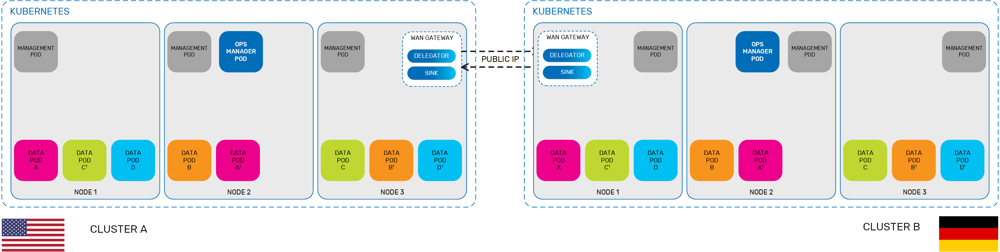

You can implement multi-region replication in Kubernetes by deploying a
This topic describes how to set up a WAN gateway for a
This topic assumes knowledge of how to set up a WAN gateway in
In order to create the necessary clusters and configure them for the WAN gateway, there are several requirements that must be met:
You need to ensure that you have the necessary user access rights and tools to create multiple clusters and connect them to each other. The AWS user that creates the clusters needs to have full rights over cluster formation, which is enabled by making sure the user has the following AWS Managed Permissions:
Additionally, the user needs the EKS admin policy (with cloudformation_full_access enabled), which allows full access and admin rights to the cluster via both the AWS CLI and AWS cloud management.
After the appropriate user has been created, you need to create a user role for EKS cluster creation that has the following enabled:
If you have two different users (for example, one user that creates the clusters and another user that configures them), then you need to assign a trust relationship to the user that will be configuring the cluster. This ensures that the second user can use the AWS CLI and the Helm chart to configure the necessary aspects of the cluster.
2 AWS clusters deployed, one for US and one for DE.
deploy the PUs in the clusters and view them in Ops Manager.
Can user the REST Manager API to see that the
Can use Apache Zeppelin to populate one side and see how the data is replicated (can connect to one cluster (zone), write data, see if the data is replicated in the other cluster/zone).
summary for configuring Amazon EKS side to support WAN gateway:
create user
assign role
assign trust relationship to the user you created (to enable using the CLI to deploy with Helm, etc.).
Defining a
The following procedure creates a WAN gateway environment for a cluster located geographically in the U.S. You will need the

Helm must be installed before you download the
Before you install the Helm chart for the
To configure the WAN gateway Helm chart:
Download the Helm charts as described in the
Add the zone configuration. For example, see the following snippet from the Helm chart that defines the zone and the designates the ports that will be used for communication (the discovery port is the default port :
# heap: Define the size of the on-heap memory for each processing unit instance as either a percentage or an absolute value.
heap: limit-150Mi
# options: Configure additional Java options for each processing unit instance.
options:
-Dcom.gs.zones=US
-Dcom.sun.jini.reggie.initialUnicastDiscoveryPort=4174
-Dcom.gigaspaces.start.httpPort=9713
-Dcom.gigaspaces.system.registryPort=10298When the Helm chart has been configured correctly, you can begin installing the components. The Manager is always installed first, followed by the services that it will manage.
To install the WAN gateway components:
Install the Manager. You can use the default configuration.
helm install insightedge --name demo-usTo check the status of the host and services, use the following command:
kubectl get allDeploy the Space service. You need to enable the LRMI service so that the Spaces can communicate with each other to replicate the data. (Note the public IP address that is assigned, so that you can add it to the WAN gateway pu.xml file. )
helm install insightedge-pu --name spaceus --set manager.name=demo-us,service.lrmi.enabled=true,resourceUrl=<path to US Space pu.xml>After updating the pu.xml file with the Space public IP addresses for both clusters, you can deploy the WAN gateways, which also must have the LRMI enabled.
helm install insightedge-pu --name wangateway-us --set manager.name=demo-us,resourceUrl=<path to WAN gateway pu.xml>,service.lrmi.enabled=trueWhen all the components have been deployed, you can populate the delegator Space and verify that data replication occurs.
ScalaSpaceApp in github
If you have to take a Space and then redeploy it, the public IP address will change. The WAN gateway pu.xml must be updated accordingly.
then can use Zeppelin to test communication between the clusters.
if you want to see information about the WAN gateways you need to look in the logs. info currently not available in Ops Manager.
To see information about your WAN gateways, you can view the system logs.
To test whether your data is replicating between your clusters, you can use Apache Zeppelin to write data to the delegator and then query the sink.